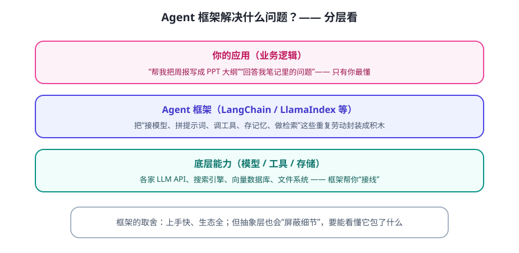

写 Agent 时你会发现大量“接线”工作：连模型、拼提示词、注册工具、管记忆、做检索……框架（如 LangChain、LlamaIndex）把这些封装成积木。它们是工具，不是魔法——前两周的原理依然全部适用。
框架帮你省了什么

| 常见重复劳动 | 框架提供的抽象 |
|---|---|
| 切换不同厂商的模型 | 统一的 Model 接口 |
| 把工具说明注册给 LLM | Tool 装饰器 / 工具列表 |
| 对话历史怎么带 | Memory 组件 |
| 文档切块/向量化/检索 | Loader / Splitter / Retriever |
| ReAct 循环怎么写 | Agent + Executor |
LangChain 与 LlamaIndex 怎么选（粗略指南）
- LangChain：生态大、组件全，适合做“有工具、多步骤、要编排”的通用 Agent。
- LlamaIndex：专注“文档/数据接入 + 检索问答”，做知识库/RAG 更顺手。
- 两者不是敌人，很多项目混用，或干脆用更轻的方案（自己写 100 行）。
⚠️ 客观提醒：框架更新极快、版本之间 API 常变，网上的老教程经常跑不通。学习时以官方文档 + 当前版本示例为准，别背旧代码。这也是本课不给“必跑代码”的原因。
一个判断框架是否好用的清单
- 出问题能不能看懂它的报错和源码？（太黑盒 = 以后难排查）
- 升级频繁吗？社区活跃吗？（活跃 = 修 bug 快，但也可能天天变）
- 你只是想要一个检索问答，还是复杂编排？（需求简单就别上重框架）
✍️ 今日练习（约 12 分钟）
- 浏览 LangChain / LlamaIndex 官网首页（只读，不装），各记下 3 个核心概念。
- 把你 Day 14 的笔记问答助手，映射到框架组件（Loader/Splitter/Retriever…），画一张对应图。
- 写下你的判断：你的第一个正式项目，用框架还是手写？理由是什么？
📌 今日小结
框架价值封装“接模型/拼提示/注册工具/管记忆/检索”等重复劳动
两个代表LangChain（通用 Agent 编排）· LlamaIndex（文档/RAG）
核心提醒原理不变；API 常变，以官方文档为准
选择观需求简单就别上重框架；黑盒要能看懂源码
明天预告：动手用框架的核心组件——Model、Prompt、Tool、Memory、Retriever 各是干嘛的、怎么拼。